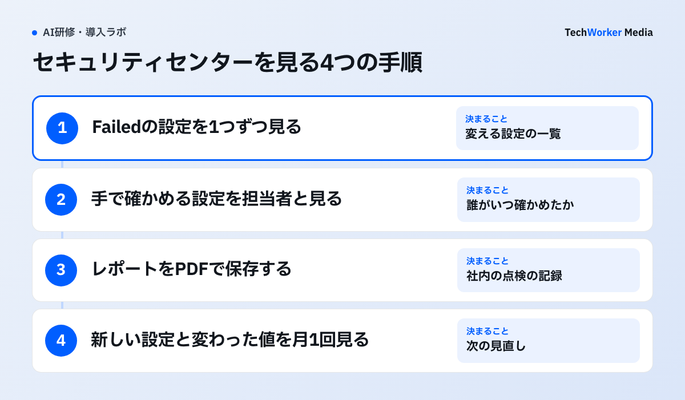

Claudeを全社に配った情シスは、今の設定で足りているかを説明する場面があります。11月5日に、Claude Enterpriseの設定を1ページでまとめて見比べる画面が加わりました。この記事では、何が見えて、誰が開けて、社内の点検でどう使うかを説明します。
11月5日、設定を1ページで見比べる画面が加わった
原文“For each control, the security center shows the current value, the recommended value where there is one, and a link to the setting where you can change it. It also shows which settings are new or recently changed.”
日本語訳セキュリティセンターは、項目ごとに、現在の値、推奨の値（ある場合）、変更できる設定へのリンクを表示します。新しい設定や最近変わった設定も示します。

画面は、Organization settingsの「Security posture」です。上の段に、割り当てた人数や使っている人数、コネクタの数、オーナーの人数が並びます。中央の円は、16項目のうち13項目が合格（81%）という結果です。右側は、Org・Cowork・Claude Codeのグループごとの合格数です。下の一覧には、Failedの項目と今の値が出ます。この例では「Group mappings」がオフです。「Always allow tool approvals by default」はオンです。右上には「Download report」のボタンがあります。
この数字は、告知に例として載った画面の値です。自社でどの項目が推奨と違うかは、実際に開くまで分かりません。推奨の値そのものの一覧も、告知には載っていません。


ヘルプでは開けるのはオーナーだけで、画面は見るだけ
ヘルプセンターによると、開けるのはOwnerとPrimary Ownerです。AdminとUserは開けません。画面は見るだけで、設定の変更はそれぞれの設定ページで行います。
開き方は、Claudeのアカウントメニューから「Organization settings」を選び、「Security posture」を押します。対象はClaude Enterpriseで、今はベータです。告知の文には、Adminがセキュリティセンターを管理できるとも書かれています。誰が開けるかは、自社の画面でも確かめてください。
項目は、組織・チャット・Cowork・Claude Codeの4つのグループに分かれます。それぞれに合格の数が出ます。判定は次の4種類です。
| 表示 | 意味（ヘルプセンター） | 情シスがすること |
|---|---|---|
| Passed | 推奨の値と合っている | そのまま残す |
| Failed | 推奨と違う。理由と変える場所が出る | 変えるか、変えない理由を社内で記録する |
| Not attested | 人の確認が要る | 担当者と確かめて記録する |
| Shown for information | 参考の表示で、判定はしない | 値だけ控える |
ほかに、結果の推移、メンバーの利用状況、カスタムロールがコネクタやClaudeの機能で何を許すかも見られます。
自動で確かめられない設定は、人が確認して記録する
端末の管理ツールやClaude Codeの管理設定で決める項目は、画面から読めません。こうした項目は「Check manually」と出るので、今の状態を確かめて記録します。
この記録を、Anthropicは「attestation（確認の記録）」と呼んでいます。項目ごとに今の状態を書き、リスクを受け入れるか、問題として印を付けるかを選べます。誰がいつ記録したかも残ります。ヘルプでは、レポートに「オーナーが確かめた項目」として載ります。告知は、この記録をAdminが共同で使う場と説明しています。
レポートはブラウザで「Download report」を押し、PDFで保存します。自動で確かめた項目と、オーナーが確かめた項目が分けて載ります。Compliance APIを使っている組織は、同じ結果をAPIでも読めます。
ただし、Anthropicは「認証や法令への準拠の保証ではない」と書いています。PDFは、Anthropicの推奨と比べた社内の点検記録として扱うのが安全です。外部の監査に出す場合は、監査人が何を求めるかを先に確かめてください。
見る順番：Failedから片づけ、月1回見直す
TechWorkerは、Failedを1つずつ判断し、次に手で確かめる項目を担当者と記録する順を勧めます。PDFを保存したら、月1回、新しい項目と変わった値を見ます。

次の図は、TechWorkerが勧める順番です。Anthropicが定めた手順ではありません。
Failedは、すべてを推奨に合わせる必要はありません。業務の都合で推奨と違う値にしている設定は、変えない理由を社内の記録に残す方法もあります。これはTechWorkerの提案で、画面の機能ではありません。
手で確かめる項目は、端末管理やClaude Codeの管理設定の担当者と一緒に見ます。担当が分かれている場合は、先に担当者を決めます。研修で設定を説明するときも、この画面の判定と同じ言葉を使うと、社内の説明がそろいます。
同じ告知で、推論フックが一般提供と案内されました。プロンプトとツールの呼び出しを、自社のセキュリティの道具で確かめる仕組みです。複数の組織を1つの管理画面でまとめる機能は、ベータで始まりました。初期設定は元に戻せないため、親組織の管理者を先に決めるよう告知は求めています。
今日やること：オーナーが画面を開き、担当を決める
- Ownerの人が「Organization settings」の「Security posture」を開き、Failedの数を確かめます。
- Failedの項目ごとに、変えるか、変えない理由を社内で記録するかを決めます。
- 「Check manually」の項目を、端末管理とClaude Codeの管理設定の担当者と確かめ、記録します。
- PDFを保存し、次に見る日を決めます。
- Claude以外の生成AIの設定も気になる場合は、研修サイトの生成AI利用の安全度チェックで確かめます。
Claudeの契約の選び方はClaudeの法人契約と料金で、Claude Codeの設定の配り方はClaude Codeの社内展開で扱っています。
出典と確認範囲
確認日：2026年11月10日。機能・開ける人・表示の種類はAnthropicの告知とヘルプセンター、見る順番と今日やることはTechWorkerの提案です。TechWorkerの環境でセキュリティセンターを開いた記録はまだありません。自社の画面での表示は、Ownerが確かめてください。